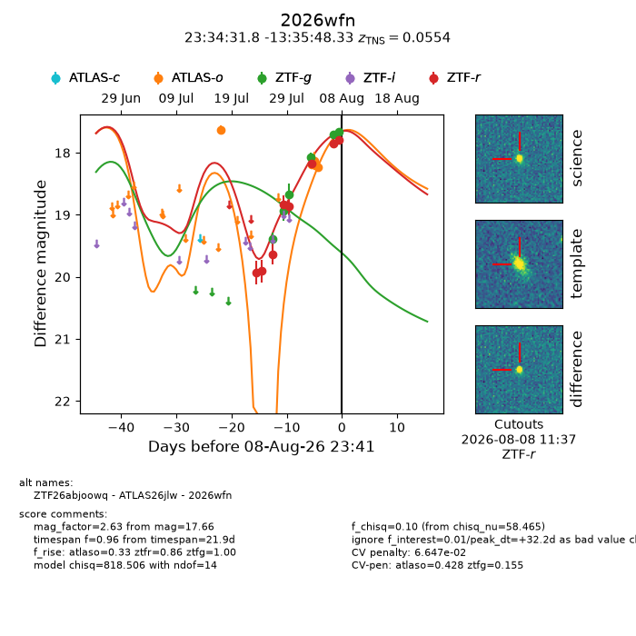
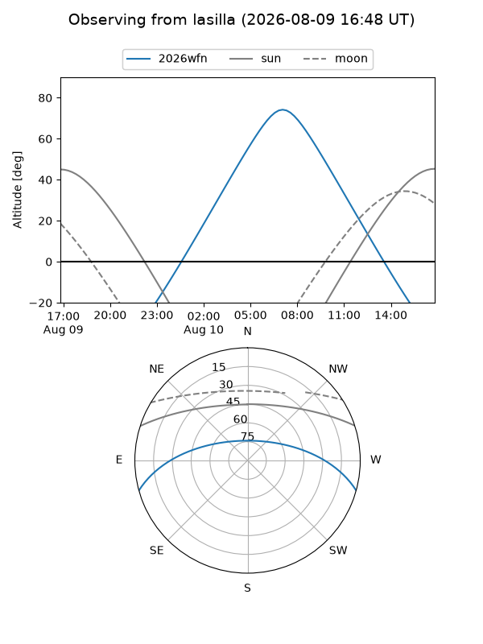
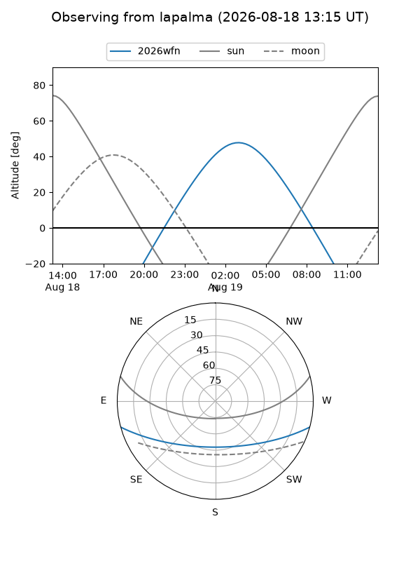
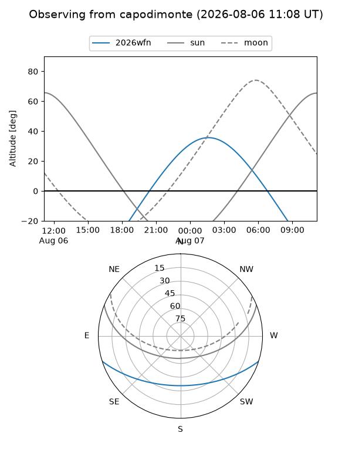
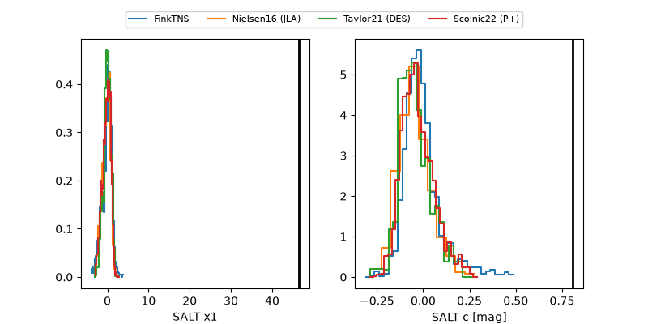

2026wfn
Target 2026wfn at 2026-08-08 23:44
Aliases and brokers:
FINK-ZTF: ztf.fink-portal.org/ZTF26abjoowq
Lasair-ZTF: lasair-ztf.lsst.ac.uk/objects/ZTF26abjoowq
ALeRCE-ZTF: alerce.online/object/ZTF26abjoowq
YSE-PZ: ziggy.ucolick.org/yse/transient_detail/2026wfn
TNS name: wis-tns.org/object/2026wfn
Direct TNS query: direct search
alt names
ZTF26abjoowq (ztf,fink_ztf)
2026wfn (tns,yse)
ATLAS26jlw (atlas)
Coordinates:
equatorial (ra, dec) = 353.6326,-13.59676
equatorial (HMS+DMS) = 23:34:31.82,-13:35:48.33
galactic (l, b) = (66.1073,-67.51666)
Flags:
TNS type: SN Ia
TNS redshift: 0.0554
peak dt: +32.2
likely cv: !!
Photometry:
last atlaso=18.23, ztfg=17.66, ztfr=17.79
4 atlaso, 6 ztfg, 8 ztfr detections
Lightcurve

Visibility



Additional plots
